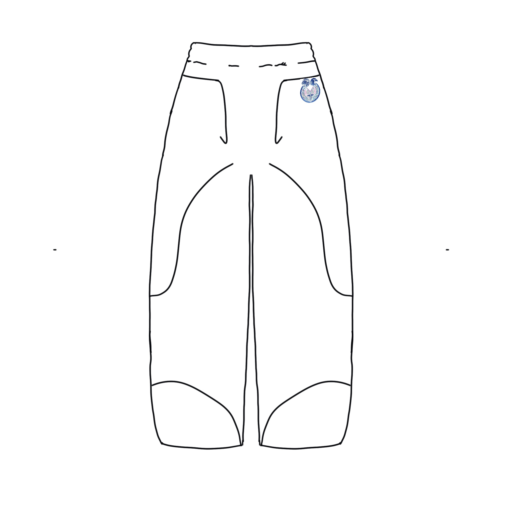
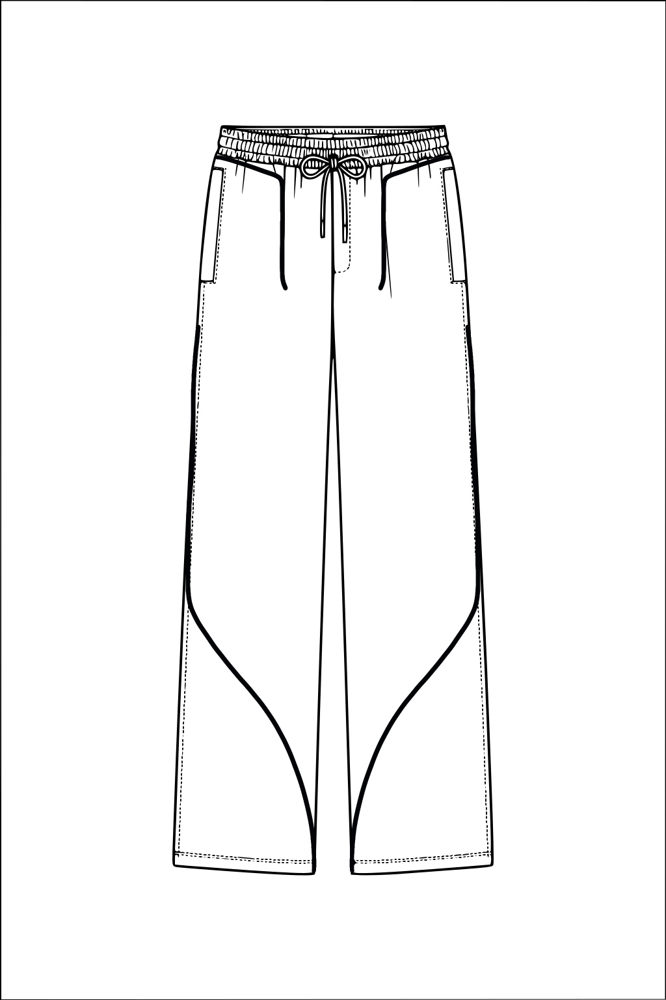
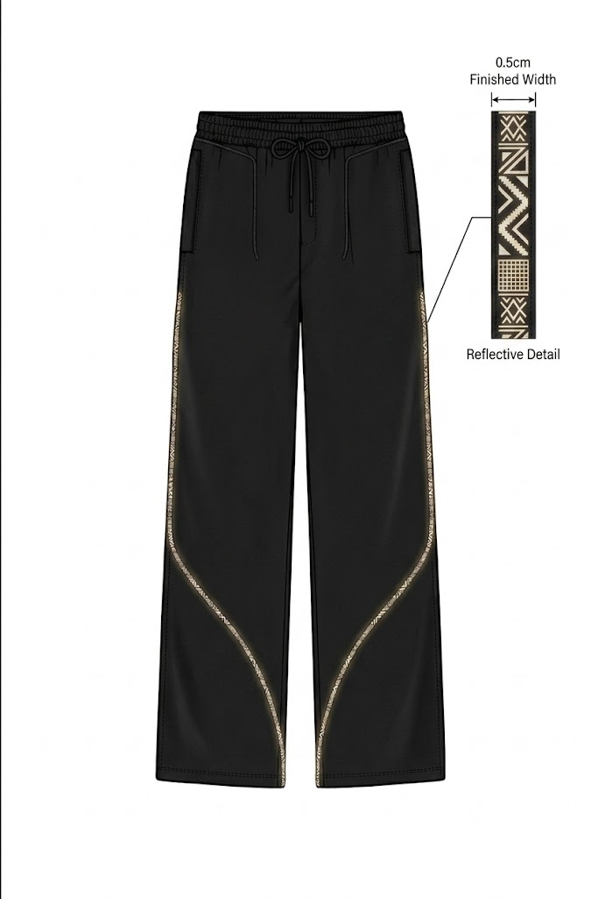
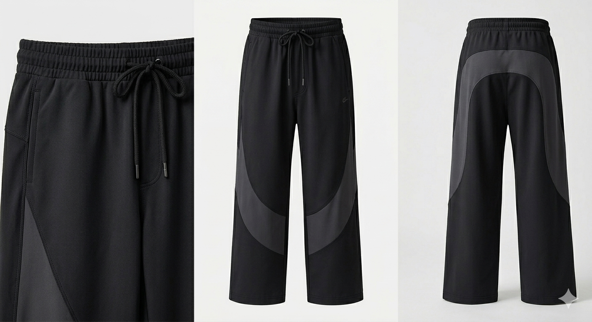
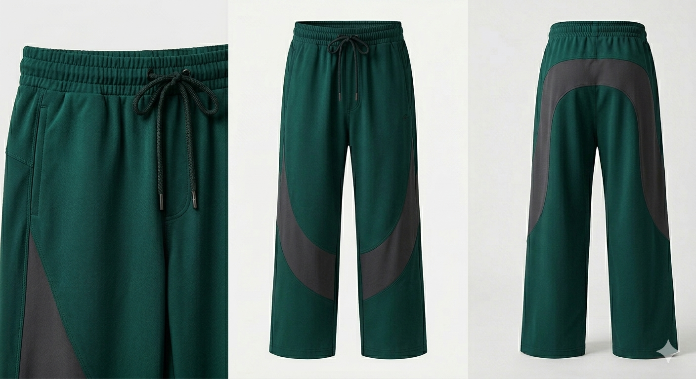
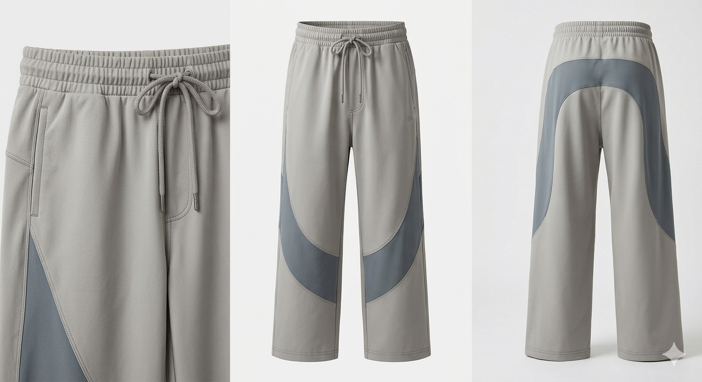
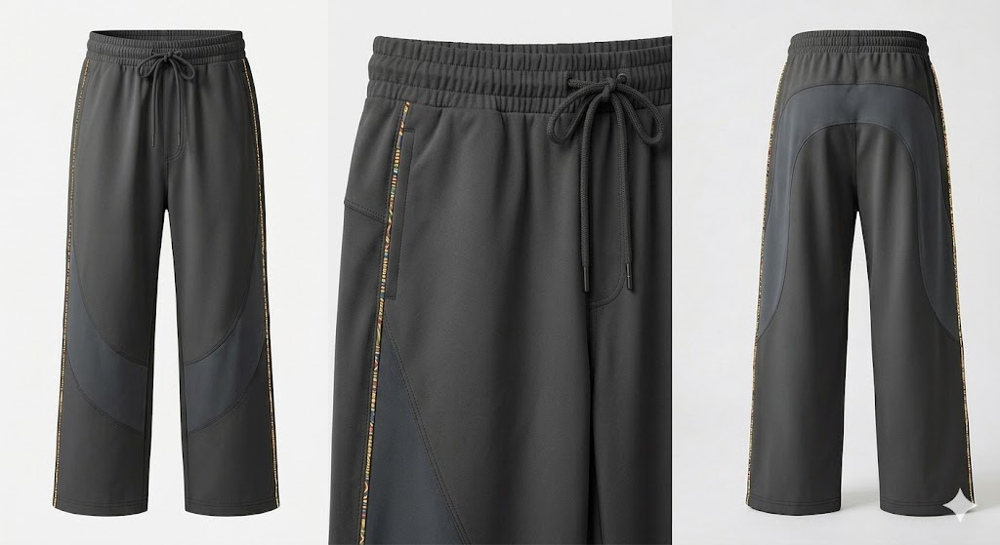
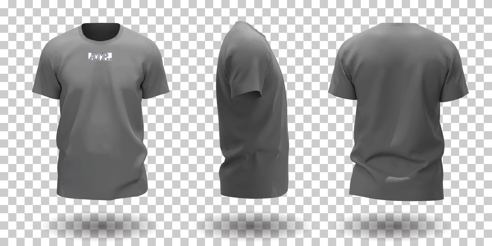
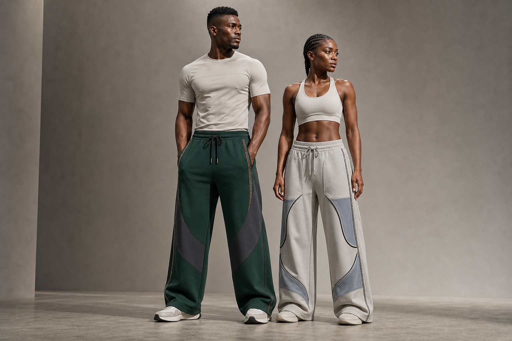

Raw line
Keep the wide leg, high waist, side pocket idea, and crescent lower panel.
Design studio
This page positions early drawings as design development, then shows how the linework becomes panels, trim, colorways, and product photography.

The sketch does not need to look finished to be useful. It establishes proportion, pocket placement, and the curve language that drives the final pants.

Keep the wide leg, high waist, side pocket idea, and crescent lower panel.
Resolve the drawing into symmetrical linework ready for tech-pack notes.

Use Nigerian-inspired geometry as a functional reflective finish.
The same base pant can serve premium, sport, neutral, and heritage-forward releases without losing the ATP identity.




The tee can stay intentionally restrained while the pant carries the brand’s strongest panel and trim language. That keeps the outfit wearable and easier to merchandise.
Back to shop
